Overview
To drive sales of the portable projector series, we aimed to optimize the previous generation and uncover new opportunities. The insights informed an integrated product experience across hardware, software, and the mobile app, creating a more intuitive and effortless projection experience while extending the product beyond basic viewing into everyday bedroom routines. First-year sales grew by 148%, while the accompanying app was downloaded 1.1 times the number of projectors sold.
Impact
- Received the Good Design Award and Taiwan Excellence Award
- Boosted portable projector sales by 148%
- Established and led a structured usability testing workflow
- Developed smart remote app for projectors, now compatible across all future Google TV models
Setup challenges and feature gaps
In the early phase of this project, I conducted heuristic evaluation, competitive analysis, and customer feedback analysis to identify the core pain points of the previous-generation portable projector (GV31) and to further understand market trends.

We found that the GV31’s strength lies in its streaming experience. However, when it comes to the setup process, it falls short compared with competing products. We also identified issues with dongle installation and UI usability, adding further friction to the overall setup experience. Specifically, users consistently reported difficulties installing the dongle, with some unsure of how to install it and others finding the process challenging.
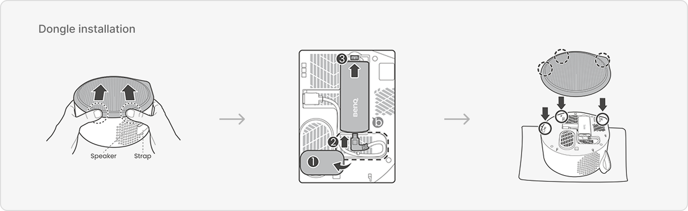
Meanwhile, limitations of the Android TV–based framework separated the OS menu from the OSD, making projection setup less intuitive and potentially confusing users.

We also observed that competitors offered distinctive features that were not available on the GV31, including more convenient control options, such as remote control apps, and more diverse experiences.
Bedroom experience emerged as the key design opportunity
To further define the distinctive features our target users might seek, I conducted desk research within a tight development timeline. I drew primarily on an existing U.S. market survey and complemented it with Python-based analysis of discussions collected through official APIs from major forums in both markets. I then synthesized the findings into a customer journey map to visualize the user experience across key touchpoints and developed personas based on these insights, helping align the team throughout the development process.
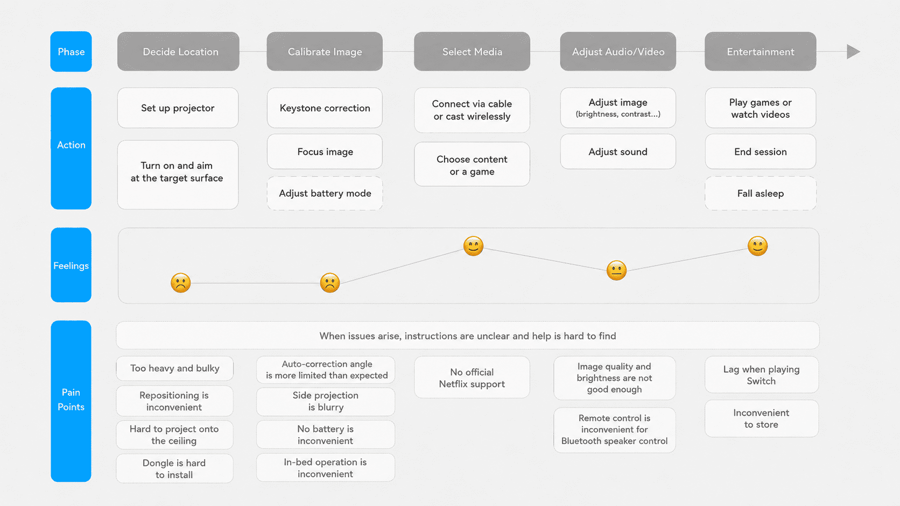
Key insights
- Users primarily use projectors in the bedroom, where frequent movement and storage make effortless setup especially important.
- Ceiling projection emerged as a strong user need for a more comfortable bedroom viewing experience, yet few existing products were designed to support it well.
-
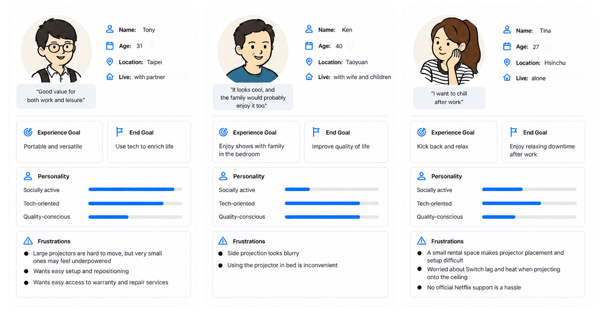
Users shared a desire for technology that enhances and enriches their everyday lives. This suggested that they were looking for not just a projector, but the moments and atmosphere it could create.
Research shaped two key design implications
Through a cross-functional workshop and ongoing discussions with PM, TM, ID, and OEM teams, we explored potential solutions and refined our ideas within project constraints. This led to two key design directions:
01 — Enable flexible and effortless bedroom setup
Portable projectors are valued for their mobility, yet users still rely on highly varied and often improvised setup methods. The design should better support different bedroom layouts and projection angles while reducing setup effort through more intuitive and intelligent assistance.
02 — Enrich the experience beyond projection
Beyond simply functioning as a display device, we explored how the projector could play a more active role in users’ everyday lives through intelligent, lifestyle-oriented experiences, enriching users’ digital lives while further increasing engagement and long-term product stickiness.
Major Design Deliverables
1. Enable flexible initial setup
The GV50 features an integrated tripod with 135° vertical rotation, allowing users to easily position the projection for both side and ceiling viewing.
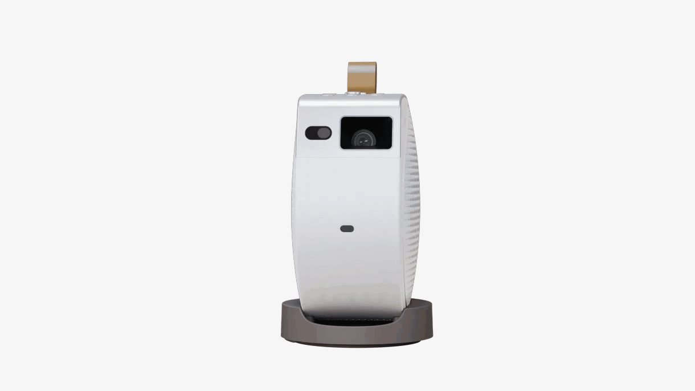
We also redesigned the top controls, adding a joystick and zoom lever to make adjustments quicker and more effortless.
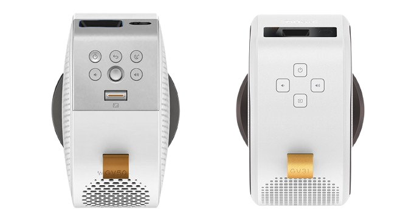
2. Make fine-tuning intuitive
We adopted the Google TV framework, which resolved the issue of inconsistent UI structures, eliminated the need for a dongle, improved overall system stability, and delivered the full OTT experience users value.
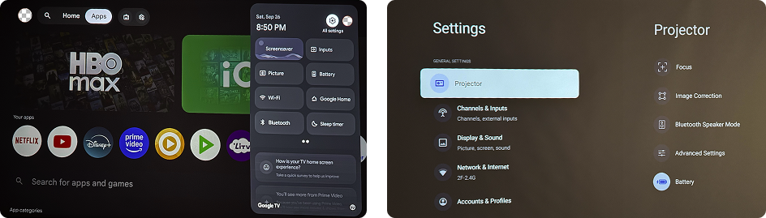
Within Google TV’s customization constraints, we streamlined the settings menu and surfaced frequently used functions as much as possible. Smart adjustments—including rotation, screen fit, obstacle avoidance, zoom, and repositioning—were added, making projection fine-tuning more effortless.
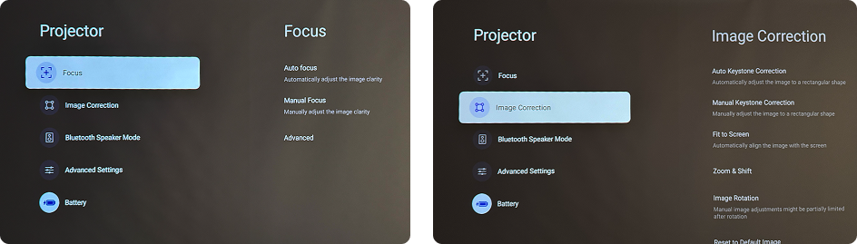
To further reduce the effort of navigating through the settings menu, we developed Smart Remote to provide quick access to key adjustment functions directly from users’ phones, making fine-tuning faster and more convenient even after users had settled into their viewing position.
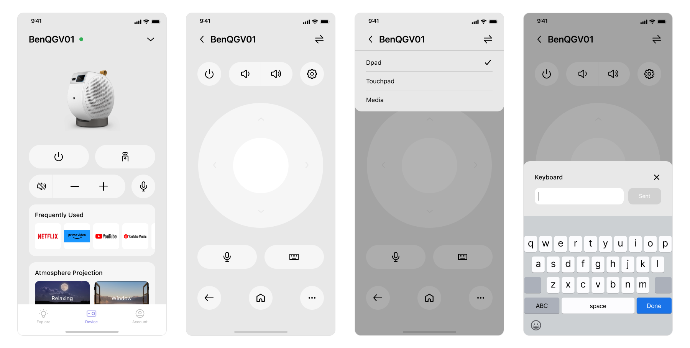
3. Enrich the bedroom experience
We extended the experience beyond basic viewing by designing features around how users actually spend time in the bedroom.
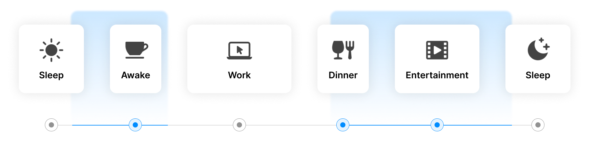
As part of this project, we developed an on-projector Assistant app that works as a bridge between Google TV and BenQ-specific functions, enabling richer functionality beyond the platform’s native customization capabilities.
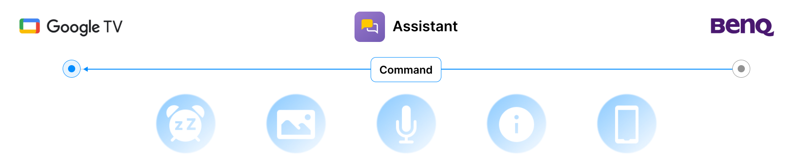
Building on this integration, Smart Remote turns users’ phones into Bluetooth remote controls, allowing multiple users to control the projector without getting up or searching for the physical remote.
Beyond convenient control, we introduced lifestyle-oriented features such as ambient projection with white noise, a voice assistant trained around projector-related use cases, and a sleep timer, offering more intelligent and versatile ways for the projector to fit into users’ everyday bedroom routines.
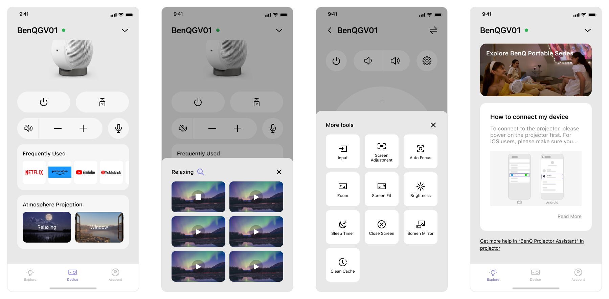
Usability Testing during Engineering Validation (EVT)
To validate the GV50 design, I led usability testing during the EVT phase. Due to differences in the development timeline, the projector and apps were evaluated in separate studies.
Simulating real-world use
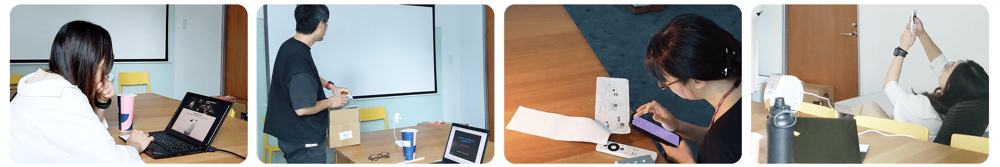
Participants were guided through a scenario in which they had just received a newly purchased projector.
Task flow
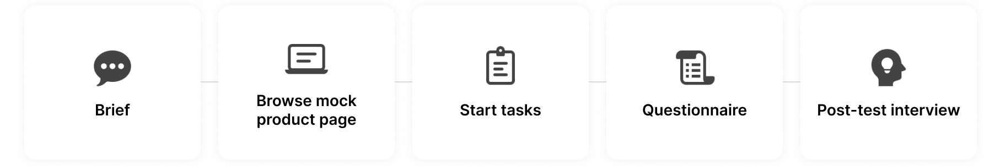
Task design was based on the most frequent user behaviors and the core features of the GV50.
Key findings
01 — Quick setup worked, but ceiling projection remained challenging
“It's hard to read the menu when the image hasn't been corrected on the ceiling yet”
On average, participants spent about 6 minutes manually adjusting the projection on the ceiling, yet most still reported feeling frustrated. We observed that when projecting onto ceilings with more constraints, the process of finding functions and making adjustments felt overly complex to users—particularly when the image was not yet properly aligned, which could make the UI difficult to read.
Design response
- Show a toast notification when obstacles are detected, prompting users to enable obstacle avoidance and reducing adjustment effort
- Ask for confirmation before triggering auto-correction after manual fine-tuning, preventing users’ adjustments from being reset unexpectedly
- Allow users to save and recall projection settings for frequently used locations
02 — Key functions were still too difficult to access
Frequently used functions such as the sleep timer were still not easy enough to access within Google TV’s constraints.
“I'm lying down far from the projector—using the remote is more convenient.”
Additionally, while users found the top controls convenient, they still preferred the remote control in certain scenarios.
Design response
- In the short term, the findings reinforced the importance of the remote control app and confirmed the need to keep frequently used functions easily accessible within the app
- In the long term, we recommended evaluating settings-menu customization flexibility when selecting the Google TV framework for the next product generation
3. GV50 features resonated with users
Participant quote to be added
Post-test interviews showed that participants especially valued the projector’s smart adjustment features.
Participant quote to be added
They also showed strong interest in features such as the sleep timer and ambient projection. Participants shared both their current projector habits and how they envisioned using the GV50 in everyday moments—such as playing soft music in the morning, entertaining children, or watching movies with family. These responses suggest that the convenience, atmosphere, and lifestyle-oriented experiences created by the GV50 resonated with users.
Outcome
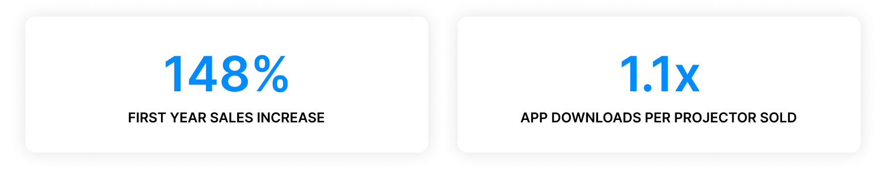
From a business perspective, other projector product lines will adopt the same Google TV framework and therefore face similar design constraints. The software solutions developed in this project create a scalable foundation for future products, allowing them to benefit from Google TV while reducing the impact of limited flexibility.
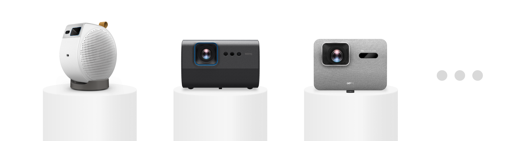
The apps also create an ongoing touchpoint with users, helping the team better understand user behavior, provide more comprehensive customer support, and strengthen long-term brand engagement.